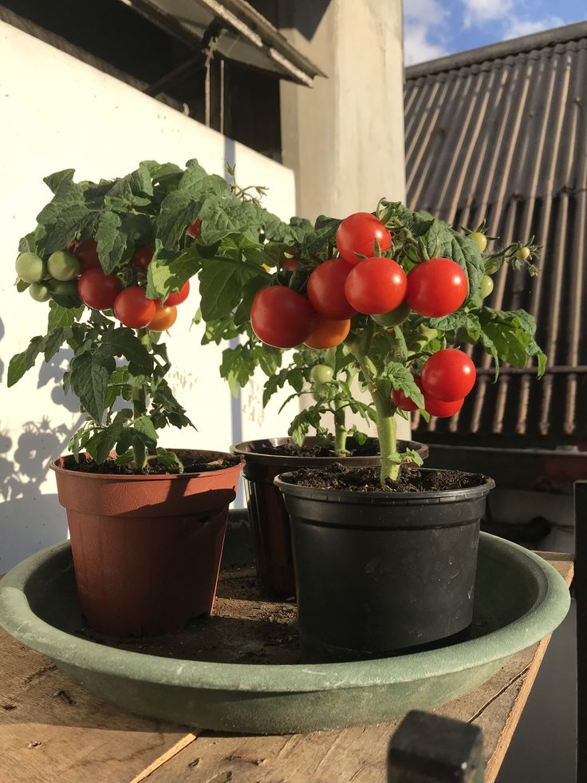
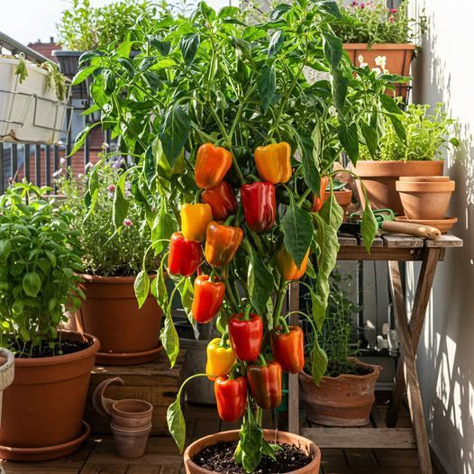
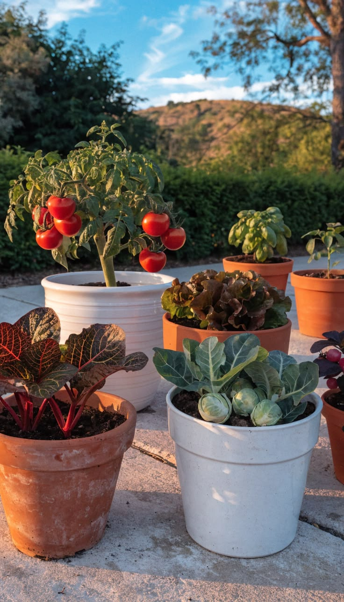
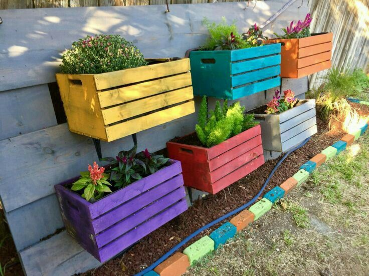
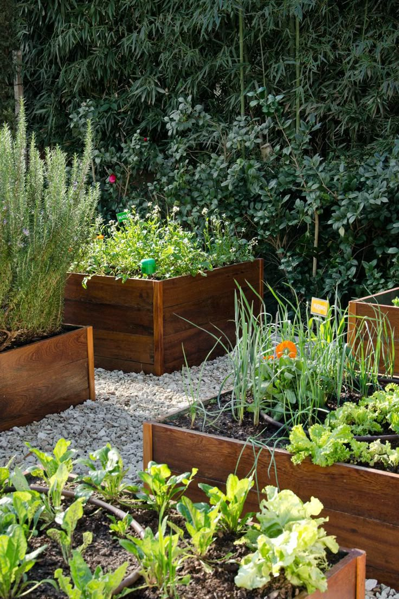
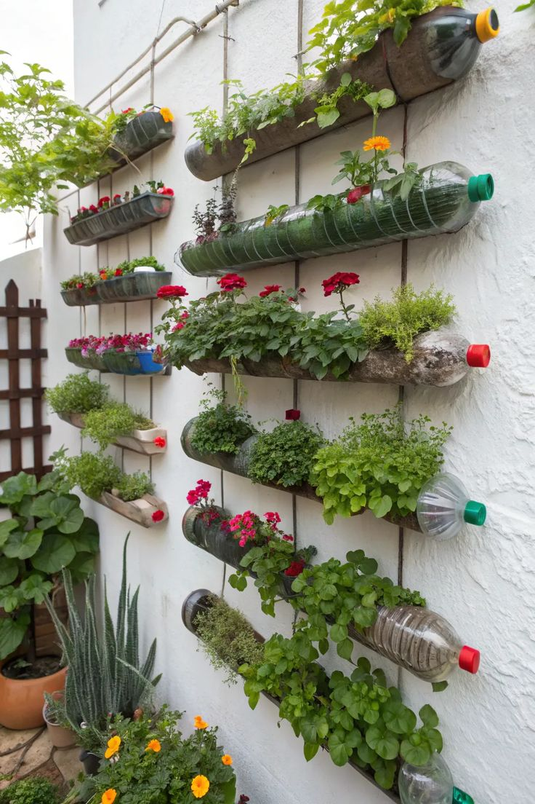
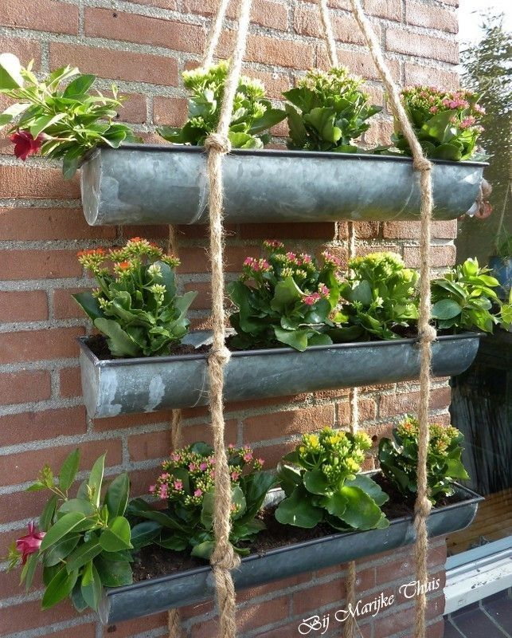
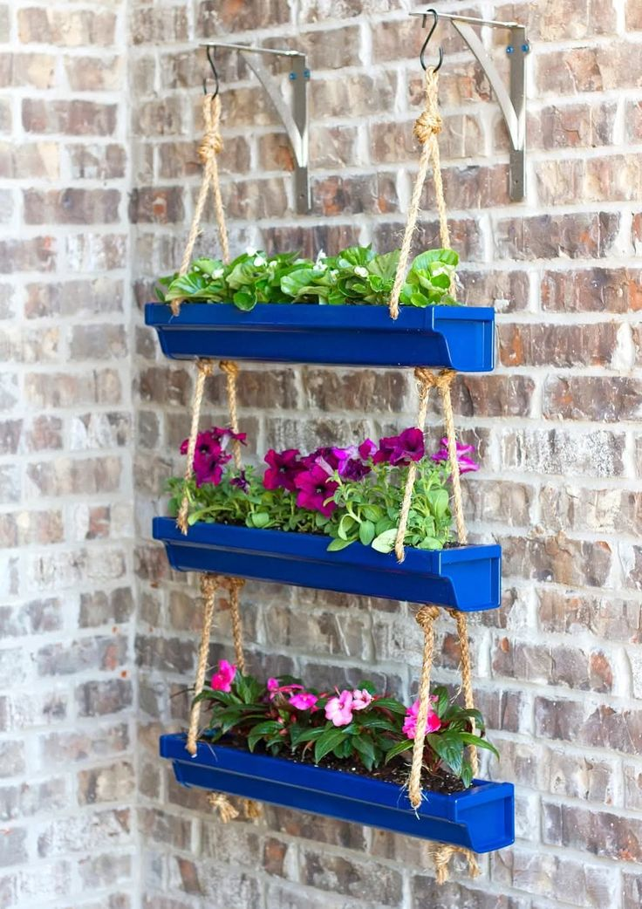

TIPOS DE HUERTOS
🌿Huertos en macetas
Es un sistema de cultivo que utiliza recipientes individuales fabricados en materiales como arcilla, plástico, fibra o cerámica, con diámetros que van desde 10 hasta más de 35 centímetros, según el tamaño de la planta que se va a cultivar. Son muy prácticos porque se pueden colocar en cualquier lugar —como balcones, terrazas o interiores— y moverse con facilidad para ajustar la exposición al sol o proteger las plantas de condiciones climáticas adversas. Permiten un control sencillo del tipo de tierra, los nutrientes y el riego, pero requieren que se riegue con más frecuencia, ya que la tierra se seca rápido, y es indispensable que tengan orificios en el fondo para que drene el agua y evitar que las raíces se pudran. Son ideales para cultivar hierbas aromáticas, flores, hortalizas pequeñas y plantas decorativas.



📦Huertos en cajones o cajas
Consiste en estructuras rígidas de forma rectangular o cuadrada, hechas principalmente de madera, plástico, metal o cemento, con alturas de entre 20 y 40 centímetros y anchos que no suelen superar el 1,20 metros para que sea fácil llegar al centro sin inclinarse demasiado. Se pueden colocar en el suelo o elevarse sobre patas, lo que facilita las tareas de cuidado y evita el contacto directo con plagas o malas hierbas del terreno. Permiten sembrar varias especies juntas y retienen mejor la humedad y los nutrientes que las macetas individuales, aunque son pesados y difíciles de trasladar una vez que se han llenado de tierra. Son perfectos para cultivar hortalizas de hoja, de raíz y de fruto, y se adaptan muy bien a espacios reducidos. Este fue el tipo de huerto que seleccionamos para sembrar los vegetales y producir nuestros productos.



↕️Huertos colgantes
Aprovecha el espacio vertical mediante recipientes ligeros —como macetas pequeñas, bolsas de tela, botellas recicladas o cajones livianos— que se cuelgan de techos, vigas, barandillas o paredes con cuerdas, cadenas o soportes resistentes. Es la mejor opción cuando se tiene muy poco espacio disponible, ya que no ocupa superficie en el suelo; además, protege las plantas de plagas que viven en la tierra y aporta un toque decorativo muy atractivo. Sin embargo, la tierra se seca con mucha rapidez por la exposición al aire y al sol, por lo que necesita riegos constantes, y solo sirve para especies de tamaño pequeño o que crecen de forma rastrera o colgante, como fresas, tomates cherry, menta, albahaca y otras hierbas aromáticas.


